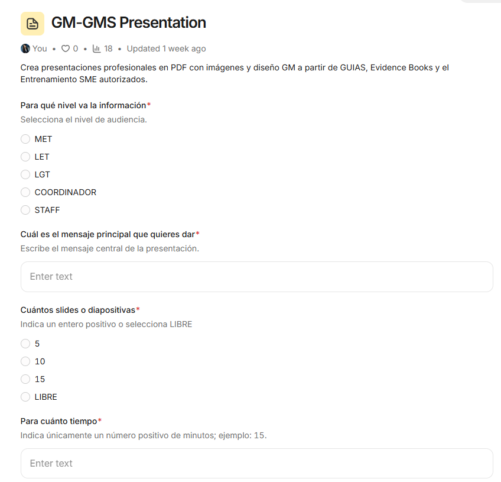
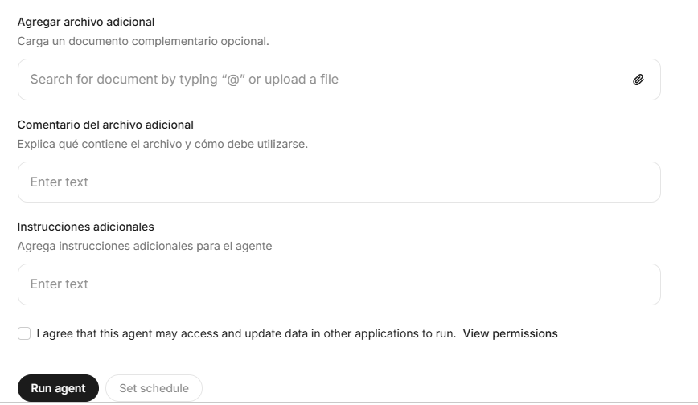

Descripción
¿Qué hace el agente?
Crea presentaciones profesionales en PDF con imágenes y diseño GM a partir de GUIAS, Evidence Books y el Entrenamiento SME autorizados.
- Generación de presentaciones profesionales en PDF con diseño GM.
- Fuentes autorizadas: GUIAS, Evidence Books y Entrenamiento SME.
- Selección del nivel de audiencia (MET, LET, LGT, Coordinador, Staff).
- Control del mensaje principal, número de slides y duración.
- Opción de agregar un documento complementario con instrucciones.
Galería del proyecto
Vistas del agente

